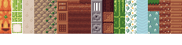

我在多个地方看到过这个话题出现多次。基本上就是，“我如何制作像Minecraft那样的体素显示”。
大多数人最初尝试的方法是制作一个立方体几何体，然后在每个体素位置制作一个网格。我出于好玩尝试了这个方法。我制作了一个包含16777216个元素的Uint8Array，用来表示一个256x256x256的体素立方体。
const cellSize = 256; const cell = new Uint8Array(cellSize * cellSize * cellSize);
然后我制作了单层地形，像这样有一种类似正弦波的丘陵
for (let y = 0; y < cellSize; ++y) {
for (let z = 0; z < cellSize; ++z) {
for (let x = 0; x < cellSize; ++x) {
const height = (Math.sin(x / cellSize * Math.PI * 4) + Math.sin(z / cellSize * Math.PI * 6)) * 20 + cellSize / 2;
if (height > y && height < y + 1) {
const offset = y * cellSize * cellSize +
z * cellSize +
x;
cell[offset] = 1;
}
}
}
}
然后我走过所有的单元格，如果它们不是 0，我就用一个立方体创建了一个网格。
const geometry = new THREE.BoxGeometry(1, 1, 1);
const material = new THREE.MeshPhongMaterial({color: 'green'});
for (let y = 0; y < cellSize; ++y) {
for (let z = 0; z < cellSize; ++z) {
for (let x = 0; x < cellSize; ++x) {
const offset = y * cellSize * cellSize +
z * cellSize +
x;
const block = cell[offset];
const mesh = new THREE.Mesh(geometry, material);
mesh.position.set(x, y, z);
scene.add(mesh);
}
}
}
其余的代码基于按需渲染的文章的示例。
启动需要一段时间，如果你尝试移动相机，可能会太慢。像关于如何优化大量对象的文章一样，问题在于对象实在太多。256x256 是 65536 个盒子！
使用合并几何体的技术可以解决这个示例中的问题，但如果不仅仅是制作单层，而是把地面下的所有部分都填充为体素会怎样呢。换句话说，将循环填充体素改为这个
for (let y = 0; y < cellSize; ++y) {
for (let z = 0; z < cellSize; ++z) {
for (let x = 0; x < cellSize; ++x) {
const height = (Math.sin(x / cellSize * Math.PI * 4) + Math.sin(z / cellSize * Math.PI * 6)) * 20 + cellSize / 2;
- if (height > y && height < y + 1) {
+ if (height < y + 1) {
const offset = y * cellSize * cellSize +
z * cellSize +
x;
cell[offset] = 1;
}
}
}
}
我尝试过一次只是为了看看结果。它处理了大约一分钟，然后就因内存不足而崩溃了 😅
有几个问题，但最大的问题是我们在立方体内部创建了许多实际上永远看不到的面。
换句话说，假设我们有一个 3x2x2 的体素盒子。通过合并立方体，我们得到的是这个
但我们真正想要的是这个
在顶部的方框里，有一些面位于体素之间。这些面是浪费的，因为它们看不到。不只是每个体素之间一个面，有两个面，每个体素都有一面朝向它的邻居，这是浪费的。所有这些额外的面，尤其是对于大体积的体素，将严重影响性能。
应该很清楚，我们不能只是合并几何体。我们需要自己构建它，同时考虑到如果一个体素有相邻的邻居，它就不需要朝向该邻居的面。
下一个问题是 256x256x256 的体素体积太大了。16 兆是很多内存，如果很多空间都没有内容，那就是大量浪费的内存。这也是一个巨大的体素数量，1600 万！一次考虑这么多太多了。
一种解决方案是将区域划分为更小的区域。任何没有内容的区域都不需要存储。我们使用32x32x32的区域（也就是32k），并且只有在其内有东西时才创建该区域。我们将其中一个较大的32x32x32区域称为“单元（cell）”。
让我们把它拆分成几个部分。首先，让我们创建一个类来管理体素数据。
class VoxelWorld {
constructor(cellSize) {
this.cellSize = cellSize;
}
}
然后我们创建一个为单元生成几何体的函数。假设你传入一个单元的位置。换句话说，如果你想获取覆盖体素（0-31x, 0-31y, 0-31z）的单元的几何体，那么你会传入0,0,0。对于覆盖体素（32-63x, 0-31y, 0-31z）的单元，你会传入1,0,0。
我们需要能够检查相邻的体素，所以假设我们的类有一个函数 getVoxel，它给定一个体素位置返回那里的体素值。换句话说，如果你传入 35,0,0 并且 cellSize 是 32，它会查看单元格 1,0,0，并在该单元格中查看体素 3,0,0。使用这个函数，即使相邻的体素位于相邻的单元格中，我们也可以查看一个体素的相邻体素。
class VoxelWorld {
constructor(cellSize) {
this.cellSize = cellSize;
}
+ generateGeometryDataForCell(cellX, cellY, cellZ) {
+ const {cellSize} = this;
+ const startX = cellX * cellSize;
+ const startY = cellY * cellSize;
+ const startZ = cellZ * cellSize;
+
+ for (let y = 0; y < cellSize; ++y) {
+ const voxelY = startY + y;
+ for (let z = 0; z < cellSize; ++z) {
+ const voxelZ = startZ + z;
+ for (let x = 0; x < cellSize; ++x) {
+ const voxelX = startX + x;
+ const voxel = this.getVoxel(voxelX, voxelY, voxelZ);
+ if (voxel) {
+ for (const {dir} of VoxelWorld.faces) {
+ const neighbor = this.getVoxel(
+ voxelX + dir[0],
+ voxelY + dir[1],
+ voxelZ + dir[2]);
+ if (!neighbor) {
+ // this voxel has no neighbor in this direction so we need a face
+ // here.
+ }
+ }
+ }
+ }
+ }
+ }
+ }
}
+VoxelWorld.faces = [
+ { // left
+ dir: [ -1, 0, 0, ],
+ },
+ { // right
+ dir: [ 1, 0, 0, ],
+ },
+ { // bottom
+ dir: [ 0, -1, 0, ],
+ },
+ { // top
+ dir: [ 0, 1, 0, ],
+ },
+ { // back
+ dir: [ 0, 0, -1, ],
+ },
+ { // front
+ dir: [ 0, 0, 1, ],
+ },
+];
所以使用上面的代码，我们知道何时需要一个面。让我们生成这些面。
class VoxelWorld {
constructor(cellSize) {
this.cellSize = cellSize;
}
generateGeometryDataForCell(cellX, cellY, cellZ) {
const {cellSize} = this;
+ const positions = [];
+ const normals = [];
+ const indices = [];
const startX = cellX * cellSize;
const startY = cellY * cellSize;
const startZ = cellZ * cellSize;
for (let y = 0; y < cellSize; ++y) {
const voxelY = startY + y;
for (let z = 0; z < cellSize; ++z) {
const voxelZ = startZ + z;
for (let x = 0; x < cellSize; ++x) {
const voxelX = startX + x;
const voxel = this.getVoxel(voxelX, voxelY, voxelZ);
if (voxel) {
- for (const {dir} of VoxelWorld.faces) {
+ for (const {dir, corners} of VoxelWorld.faces) {
const neighbor = this.getVoxel(
voxelX + dir[0],
voxelY + dir[1],
voxelZ + dir[2]);
if (!neighbor) {
// this voxel has no neighbor in this direction so we need a face.
+ const ndx = positions.length / 3;
+ for (const pos of corners) {
+ positions.push(pos[0] + x, pos[1] + y, pos[2] + z);
+ normals.push(...dir);
+ }
+ indices.push(
+ ndx, ndx + 1, ndx + 2,
+ ndx + 2, ndx + 1, ndx + 3,
+ );
}
}
}
}
}
}
+ return {
+ positions,
+ normals,
+ indices,
};
}
}
VoxelWorld.faces = [
{ // left
dir: [ -1, 0, 0, ],
+ corners: [
+ [ 0, 1, 0 ],
+ [ 0, 0, 0 ],
+ [ 0, 1, 1 ],
+ [ 0, 0, 1 ],
+ ],
},
{ // right
dir: [ 1, 0, 0, ],
+ corners: [
+ [ 1, 1, 1 ],
+ [ 1, 0, 1 ],
+ [ 1, 1, 0 ],
+ [ 1, 0, 0 ],
+ ],
},
{ // bottom
dir: [ 0, -1, 0, ],
+ corners: [
+ [ 1, 0, 1 ],
+ [ 0, 0, 1 ],
+ [ 1, 0, 0 ],
+ [ 0, 0, 0 ],
+ ],
},
{ // top
dir: [ 0, 1, 0, ],
+ corners: [
+ [ 0, 1, 1 ],
+ [ 1, 1, 1 ],
+ [ 0, 1, 0 ],
+ [ 1, 1, 0 ],
+ ],
},
{ // back
dir: [ 0, 0, -1, ],
+ corners: [
+ [ 1, 0, 0 ],
+ [ 0, 0, 0 ],
+ [ 1, 1, 0 ],
+ [ 0, 1, 0 ],
+ ],
},
{ // front
dir: [ 0, 0, 1, ],
+ corners: [
+ [ 0, 0, 1 ],
+ [ 1, 0, 1 ],
+ [ 0, 1, 1 ],
+ [ 1, 1, 1 ],
+ ],
},
];
上面的代码会为我们创建基本的几何数据。我们只需要提供 getVoxel 函数。让我们从一个硬编码的单元格开始。
class VoxelWorld {
constructor(cellSize) {
this.cellSize = cellSize;
+ this.cell = new Uint8Array(cellSize * cellSize * cellSize);
}
+ getCellForVoxel(x, y, z) {
+ const {cellSize} = this;
+ const cellX = Math.floor(x / cellSize);
+ const cellY = Math.floor(y / cellSize);
+ const cellZ = Math.floor(z / cellSize);
+ if (cellX !== 0 || cellY !== 0 || cellZ !== 0) {
+ return null
+ }
+ return this.cell;
+ }
+ getVoxel(x, y, z) {
+ const cell = this.getCellForVoxel(x, y, z);
+ if (!cell) {
+ return 0;
+ }
+ const {cellSize} = this;
+ const voxelX = THREE.MathUtils.euclideanModulo(x, cellSize) | 0;
+ const voxelY = THREE.MathUtils.euclideanModulo(y, cellSize) | 0;
+ const voxelZ = THREE.MathUtils.euclideanModulo(z, cellSize) | 0;
+ const voxelOffset = voxelY * cellSize * cellSize +
+ voxelZ * cellSize +
+ voxelX;
+ return cell[voxelOffset];
+ }
generateGeometryDataForCell(cellX, cellY, cellZ) {
...
}
这看起来可行。让我们创建一个 setVoxel 函数，这样我们就可以设置一些数据。
class VoxelWorld {
constructor(cellSize) {
this.cellSize = cellSize;
this.cell = new Uint8Array(cellSize * cellSize * cellSize);
}
getCellForVoxel(x, y, z) {
const {cellSize} = this;
const cellX = Math.floor(x / cellSize);
const cellY = Math.floor(y / cellSize);
const cellZ = Math.floor(z / cellSize);
if (cellX !== 0 || cellY !== 0 || cellZ !== 0) {
return null
}
return this.cell;
}
+ setVoxel(x, y, z, v) {
+ let cell = this.getCellForVoxel(x, y, z);
+ if (!cell) {
+ return; // TODO: add a new cell?
+ }
+ const {cellSize} = this;
+ const voxelX = THREE.MathUtils.euclideanModulo(x, cellSize) | 0;
+ const voxelY = THREE.MathUtils.euclideanModulo(y, cellSize) | 0;
+ const voxelZ = THREE.MathUtils.euclideanModulo(z, cellSize) | 0;
+ const voxelOffset = voxelY * cellSize * cellSize +
+ voxelZ * cellSize +
+ voxelX;
+ cell[voxelOffset] = v;
+ }
getVoxel(x, y, z) {
const cell = this.getCellForVoxel(x, y, z);
if (!cell) {
return 0;
}
const {cellSize} = this;
const voxelX = THREE.MathUtils.euclideanModulo(x, cellSize) | 0;
const voxelY = THREE.MathUtils.euclideanModulo(y, cellSize) | 0;
const voxelZ = THREE.MathUtils.euclideanModulo(z, cellSize) | 0;
const voxelOffset = voxelY * cellSize * cellSize +
voxelZ * cellSize +
voxelX;
return cell[voxelOffset];
}
generateGeometryDataForCell(cellX, cellY, cellZ) {
...
}
嗯，我看到有很多重复的代码。让我们修复一下
class VoxelWorld {
constructor(cellSize) {
this.cellSize = cellSize;
+ this.cellSliceSize = cellSize * cellSize;
this.cell = new Uint8Array(cellSize * cellSize * cellSize);
}
getCellForVoxel(x, y, z) {
const {cellSize} = this;
const cellX = Math.floor(x / cellSize);
const cellY = Math.floor(y / cellSize);
const cellZ = Math.floor(z / cellSize);
if (cellX !== 0 || cellY !== 0 || cellZ !== 0) {
return null;
}
return this.cell;
}
+ computeVoxelOffset(x, y, z) {
+ const {cellSize, cellSliceSize} = this;
+ const voxelX = THREE.MathUtils.euclideanModulo(x, cellSize) | 0;
+ const voxelY = THREE.MathUtils.euclideanModulo(y, cellSize) | 0;
+ const voxelZ = THREE.MathUtils.euclideanModulo(z, cellSize) | 0;
+ return voxelY * cellSliceSize +
+ voxelZ * cellSize +
+ voxelX;
+ }
setVoxel(x, y, z, v) {
const cell = this.getCellForVoxel(x, y, z);
if (!cell) {
return; // TODO: add a new cell?
}
- const {cellSize} = this;
- const voxelX = THREE.MathUtils.euclideanModulo(x, cellSize) | 0;
- const voxelY = THREE.MathUtils.euclideanModulo(y, cellSize) | 0;
- const voxelZ = THREE.MathUtils.euclideanModulo(z, cellSize) | 0;
- const voxelOffset = voxelY * cellSize * cellSize +
- voxelZ * cellSize +
- voxelX;
+ const voxelOffset = this.computeVoxelOffset(x, y, z);
cell[voxelOffset] = v;
}
getVoxel(x, y, z) {
const cell = this.getCellForVoxel(x, y, z);
if (!cell) {
return 0;
}
- const {cellSize} = this;
- const voxelX = THREE.MathUtils.euclideanModulo(x, cellSize) | 0;
- const voxelY = THREE.MathUtils.euclideanModulo(y, cellSize) | 0;
- const voxelZ = THREE.MathUtils.euclideanModulo(z, cellSize) | 0;
- const voxelOffset = voxelY * cellSize * cellSize +
- voxelZ * cellSize +
- voxelX;
+ const voxelOffset = this.computeVoxelOffset(x, y, z);
return cell[voxelOffset];
}
generateGeometryDataForCell(cellX, cellY, cellZ) {
...
}
现在让我们写一些代码来用体素填充第一个单元格。
const cellSize = 32;
const world = new VoxelWorld(cellSize);
for (let y = 0; y < cellSize; ++y) {
for (let z = 0; z < cellSize; ++z) {
for (let x = 0; x < cellSize; ++x) {
const height = (Math.sin(x / cellSize * Math.PI * 2) + Math.sin(z / cellSize * Math.PI * 3)) * (cellSize / 6) + (cellSize / 2);
if (y < height) {
world.setVoxel(x, y, z, 1);
}
}
}
}
还有一些代码来实际生成几何体，就像我们在关于自定义 BufferGeometry 的文章中讨论的那样。
const {positions, normals, indices} = world.generateGeometryDataForCell(0, 0, 0);
const geometry = new THREE.BufferGeometry();
const material = new THREE.MeshLambertMaterial({color: 'green'});
const positionNumComponents = 3;
const normalNumComponents = 3;
geometry.setAttribute(
'position',
new THREE.BufferAttribute(new Float32Array(positions), positionNumComponents));
geometry.setAttribute(
'normal',
new THREE.BufferAttribute(new Float32Array(normals), normalNumComponents));
geometry.setIndex(indices);
const mesh = new THREE.Mesh(geometry, material);
scene.add(mesh);
让我们试试吧
看起来可行！好吧，让我们添加纹理。
在网上搜索时，我找到了这套由Joshtimus制作的、采用CC-BY-NC-SA许可的Minecraft纹理。我随机挑选了一些并制作了这个纹理图集。

为了简化，它们按每列一个体素类型排列，上排是体素的侧面，第2排是体素的顶部，第3排是体素的底部。
知道我们可以向我们的 VoxelWorld.faces 数据添加信息，以指定每个面要使用的行以及该面要使用的 UV。
VoxelWorld.faces = [
{ // left
+ uvRow: 0,
dir: [ -1, 0, 0, ],
corners: [
- [ 0, 1, 0 ],
- [ 0, 0, 0 ],
- [ 0, 1, 1 ],
- [ 0, 0, 1 ],
+ { pos: [ 0, 1, 0 ], uv: [ 0, 1 ], },
+ { pos: [ 0, 0, 0 ], uv: [ 0, 0 ], },
+ { pos: [ 0, 1, 1 ], uv: [ 1, 1 ], },
+ { pos: [ 0, 0, 1 ], uv: [ 1, 0 ], },
],
},
{ // right
+ uvRow: 0,
dir: [ 1, 0, 0, ],
corners: [
- [ 1, 1, 1 ],
- [ 1, 0, 1 ],
- [ 1, 1, 0 ],
- [ 1, 0, 0 ],
+ { pos: [ 1, 1, 1 ], uv: [ 0, 1 ], },
+ { pos: [ 1, 0, 1 ], uv: [ 0, 0 ], },
+ { pos: [ 1, 1, 0 ], uv: [ 1, 1 ], },
+ { pos: [ 1, 0, 0 ], uv: [ 1, 0 ], },
],
},
{ // bottom
+ uvRow: 1,
dir: [ 0, -1, 0, ],
corners: [
- [ 1, 0, 1 ],
- [ 0, 0, 1 ],
- [ 1, 0, 0 ],
- [ 0, 0, 0 ],
+ { pos: [ 1, 0, 1 ], uv: [ 1, 0 ], },
+ { pos: [ 0, 0, 1 ], uv: [ 0, 0 ], },
+ { pos: [ 1, 0, 0 ], uv: [ 1, 1 ], },
+ { pos: [ 0, 0, 0 ], uv: [ 0, 1 ], },
],
},
{ // top
+ uvRow: 2,
dir: [ 0, 1, 0, ],
corners: [
- [ 0, 1, 1 ],
- [ 1, 1, 1 ],
- [ 0, 1, 0 ],
- [ 1, 1, 0 ],
+ { pos: [ 0, 1, 1 ], uv: [ 1, 1 ], },
+ { pos: [ 1, 1, 1 ], uv: [ 0, 1 ], },
+ { pos: [ 0, 1, 0 ], uv: [ 1, 0 ], },
+ { pos: [ 1, 1, 0 ], uv: [ 0, 0 ], },
],
},
{ // back
+ uvRow: 0,
dir: [ 0, 0, -1, ],
corners: [
- [ 1, 0, 0 ],
- [ 0, 0, 0 ],
- [ 1, 1, 0 ],
- [ 0, 1, 0 ],
+ { pos: [ 1, 0, 0 ], uv: [ 0, 0 ], },
+ { pos: [ 0, 0, 0 ], uv: [ 1, 0 ], },
+ { pos: [ 1, 1, 0 ], uv: [ 0, 1 ], },
+ { pos: [ 0, 1, 0 ], uv: [ 1, 1 ], },
],
},
{ // front
+ uvRow: 0,
dir: [ 0, 0, 1, ],
corners: [
- [ 0, 0, 1 ],
- [ 1, 0, 1 ],
- [ 0, 1, 1 ],
- [ 1, 1, 1 ],
+ { pos: [ 0, 0, 1 ], uv: [ 0, 0 ], },
+ { pos: [ 1, 0, 1 ], uv: [ 1, 0 ], },
+ { pos: [ 0, 1, 1 ], uv: [ 0, 1 ], },
+ { pos: [ 1, 1, 1 ], uv: [ 1, 1 ], },
],
},
];
我们可以更新代码以使用这些数据。我们需要知道贴图图集中的一个瓦片的大小以及纹理的尺寸。
class VoxelWorld {
- constructor(cellSize) {
- this.cellSize = cellSize;
+ constructor(options) {
+ this.cellSize = options.cellSize;
+ this.tileSize = options.tileSize;
+ this.tileTextureWidth = options.tileTextureWidth;
+ this.tileTextureHeight = options.tileTextureHeight;
+ const {cellSize} = this;
+ this.cellSliceSize = cellSize * cellSize;
+ this.cell = new Uint8Array(cellSize * cellSize * cellSize);
}
...
generateGeometryDataForCell(cellX, cellY, cellZ) {
- const {cellSize} = this;
+ const {cellSize, tileSize, tileTextureWidth, tileTextureHeight} = this;
const positions = [];
const normals = [];
+ const uvs = [];
const indices = [];
const startX = cellX * cellSize;
const startY = cellY * cellSize;
const startZ = cellZ * cellSize;
for (let y = 0; y < cellSize; ++y) {
const voxelY = startY + y;
for (let z = 0; z < cellSize; ++z) {
const voxelZ = startZ + z;
for (let x = 0; x < cellSize; ++x) {
const voxelX = startX + x;
const voxel = this.getVoxel(voxelX, voxelY, voxelZ);
if (voxel) {
const uvVoxel = voxel - 1; // voxel 0 is sky so for UVs we start at 0
// There is a voxel here but do we need faces for it?
- for (const {dir, corners} of VoxelWorld.faces) {
+ for (const {dir, corners, uvRow} of VoxelWorld.faces) {
const neighbor = this.getVoxel(
voxelX + dir[0],
voxelY + dir[1],
voxelZ + dir[2]);
if (!neighbor) {
// this voxel has no neighbor in this direction so we need a face.
const ndx = positions.length / 3;
- for (const pos of corners) {
+ for (const {pos, uv} of corners) {
positions.push(pos[0] + x, pos[1] + y, pos[2] + z);
normals.push(...dir);
+ uvs.push(
+ (uvVoxel + uv[0]) * tileSize / tileTextureWidth,
+ 1 - (uvRow + 1 - uv[1]) * tileSize / tileTextureHeight);
}
indices.push(
ndx, ndx + 1, ndx + 2,
ndx + 2, ndx + 1, ndx + 3,
);
}
}
}
}
}
}
return {
positions,
normals,
uvs,
indices,
};
}
}
然后我们需要 加载纹理
const loader = new THREE.TextureLoader();
const texture = loader.load('resources/images/minecraft/flourish-cc-by-nc-sa.png', render);
texture.magFilter = THREE.NearestFilter;
texture.minFilter = THREE.NearestFilter;
texture.colorSpace = THREE.SRGBColorSpace;
并将设置传递给 VoxelWorld 类
+const tileSize = 16;
+const tileTextureWidth = 256;
+const tileTextureHeight = 64;
-const world = new VoxelWorld(cellSize);
+const world = new VoxelWorld({
+ cellSize,
+ tileSize,
+ tileTextureWidth,
+ tileTextureHeight,
+});
实际上，当我们创建几何体时使用 UV 并在制作材质时使用纹理
-const {positions, normals, indices} = world.generateGeometryDataForCell(0, 0, 0);
+const {positions, normals, uvs, indices} = world.generateGeometryDataForCell(0, 0, 0);
const geometry = new THREE.BufferGeometry();
-const material = new THREE.MeshLambertMaterial({color: 'green'});
+const material = new THREE.MeshLambertMaterial({
+ map: texture,
+ side: THREE.DoubleSide,
+ alphaTest: 0.1,
+ transparent: true,
+});
const positionNumComponents = 3;
const normalNumComponents = 3;
+const uvNumComponents = 2;
geometry.setAttribute(
'position',
new THREE.BufferAttribute(new Float32Array(positions), positionNumComponents));
geometry.setAttribute(
'normal',
new THREE.BufferAttribute(new Float32Array(normals), normalNumComponents));
+geometry.setAttribute(
+ 'uv',
+ new THREE.BufferAttribute(new Float32Array(uvs), uvNumComponents));
geometry.setIndex(indices);
const mesh = new THREE.Mesh(geometry, material);
scene.add(mesh);
最后一件事，我们实际上需要设置一些体素以使用不同的纹理。
for (let y = 0; y < cellSize; ++y) {
for (let z = 0; z < cellSize; ++z) {
for (let x = 0; x < cellSize; ++x) {
const height = (Math.sin(x / cellSize * Math.PI * 2) + Math.sin(z / cellSize * Math.PI * 3)) * (cellSize / 6) + (cellSize / 2);
if (y < height) {
- world.setVoxel(x, y, z, 1);
+ world.setVoxel(x, y, z, randInt(1, 17));
}
}
}
}
+function randInt(min, max) {
+ return Math.floor(Math.random() * (max - min) + min);
+}
有了这些，我们就得到了纹理！
让我们让它支持多个单元格。
为此，我们将使用单元格 ID 将单元格存储在对象中。
单元格 ID 只是单元格坐标，用逗号分隔。换句话说，如果我们请求体素 35,0,0，它在单元格 1,0,0 中，因此其 ID 是 "1,0,0"。
class VoxelWorld {
constructor(options) {
this.cellSize = options.cellSize;
this.tileSize = options.tileSize;
this.tileTextureWidth = options.tileTextureWidth;
this.tileTextureHeight = options.tileTextureHeight;
const {cellSize} = this;
this.cellSliceSize = cellSize * cellSize;
- this.cell = new Uint8Array(cellSize * cellSize * cellSize);
+ this.cells = {};
}
+ computeCellId(x, y, z) {
+ const {cellSize} = this;
+ const cellX = Math.floor(x / cellSize);
+ const cellY = Math.floor(y / cellSize);
+ const cellZ = Math.floor(z / cellSize);
+ return `${cellX},${cellY},${cellZ}`;
+ }
+ getCellForVoxel(x, y, z) {
- const cellX = Math.floor(x / cellSize);
- const cellY = Math.floor(y / cellSize);
- const cellZ = Math.floor(z / cellSize);
- if (cellX !== 0 || cellY !== 0 || cellZ !== 0) {
- return null;
- }
- return this.cell;
+ return this.cells[this.computeCellId(x, y, z)];
}
...
}
现在我们可以让 setVoxel 在尝试设置尚不存在的单元格中的体素时添加新单元格
setVoxel(x, y, z, v) {
- const cell = this.getCellForVoxel(x, y, z);
+ let cell = this.getCellForVoxel(x, y, z);
if (!cell) {
- return 0;
+ cell = this.addCellForVoxel(x, y, z);
}
const voxelOffset = this.computeVoxelOffset(x, y, z);
cell[voxelOffset] = v;
}
+ addCellForVoxel(x, y, z) {
+ const cellId = this.computeCellId(x, y, z);
+ let cell = this.cells[cellId];
+ if (!cell) {
+ const {cellSize} = this;
+ cell = new Uint8Array(cellSize * cellSize * cellSize);
+ this.cells[cellId] = cell;
+ }
+ return cell;
+ }
让我们使其可编辑。
首先我们将添加一个用户界面。使用单选按钮，我们可以制作一个 8x2 的瓦片数组
<body> <canvas id="c"></canvas> + <div id="ui"> + <div class="tiles"> + <input type="radio" name="voxel" id="voxel1" value="1"><label for="voxel1" style="background-position: -0% -0%"></label> + <input type="radio" name="voxel" id="voxel2" value="2"><label for="voxel2" style="background-position: -100% -0%"></label> + <input type="radio" name="voxel" id="voxel3" value="3"><label for="voxel3" style="background-position: -200% -0%"></label> + <input type="radio" name="voxel" id="voxel4" value="4"><label for="voxel4" style="background-position: -300% -0%"></label> + <input type="radio" name="voxel" id="voxel5" value="5"><label for="voxel5" style="background-position: -400% -0%"></label> + <input type="radio" name="voxel" id="voxel6" value="6"><label for="voxel6" style="background-position: -500% -0%"></label> + <input type="radio" name="voxel" id="voxel7" value="7"><label for="voxel7" style="background-position: -600% -0%"></label> + <input type="radio" name="voxel" id="voxel8" value="8"><label for="voxel8" style="background-position: -700% -0%"></label> + </div> + <div class="tiles"> + <input type="radio" name="voxel" id="voxel9" value="9" ><label for="voxel9" style="background-position: -800% -0%"></label> + <input type="radio" name="voxel" id="voxel10" value="10"><label for="voxel10" style="background-position: -900% -0%"></label> + <input type="radio" name="voxel" id="voxel11" value="11"><label for="voxel11" style="background-position: -1000% -0%"></label> + <input type="radio" name="voxel" id="voxel12" value="12"><label for="voxel12" style="background-position: -1100% -0%"></label> + <input type="radio" name="voxel" id="voxel13" value="13"><label for="voxel13" style="background-position: -1200% -0%"></label> + <input type="radio" name="voxel" id="voxel14" value="14"><label for="voxel14" style="background-position: -1300% -0%"></label> + <input type="radio" name="voxel" id="voxel15" value="15"><label for="voxel15" style="background-position: -1400% -0%"></label> + <input type="radio" name="voxel" id="voxel16" value="16"><label for="voxel16" style="background-position: -1500% -0%"></label> + </div> + </div> </body>
并添加一些 CSS 来设置样式，显示瓦片并突出显示当前选择
body {
margin: 0;
}
#c {
width: 100%;
height: 100%;
display: block;
}
+#ui {
+ position: absolute;
+ left: 10px;
+ top: 10px;
+ background: rgba(0, 0, 0, 0.8);
+ padding: 5px;
+}
+#ui input[type=radio] {
+ width: 0;
+ height: 0;
+ display: none;
+}
+#ui input[type=radio] + label {
+ background-image: url('resources/images/minecraft/flourish-cc-by-nc-sa.png');
+ background-size: 1600% 400%;
+ image-rendering: pixelated;
+ width: 64px;
+ height: 64px;
+ display: inline-block;
+}
+#ui input[type=radio]:checked + label {
+ outline: 3px solid red;
+}
+@media (max-width: 600px), (max-height: 600px) {
+ #ui input[type=radio] + label {
+ width: 32px;
+ height: 32px;
+ }
+}
用户体验将如下。如果未选择任何瓷砖并点击一个体素，该体素将被删除；或者如果点击一个体素并按住 Shift 键，它也会被删除。否则，如果选择了一个瓷砖，它将被添加。你可以通过再次点击所选瓷砖类型来取消选择。
这段代码将允许用户取消选中高亮的单选按钮。
let currentVoxel = 0;
let currentId;
document.querySelectorAll('#ui .tiles input[type=radio][name=voxel]').forEach((elem) => {
elem.addEventListener('click', allowUncheck);
});
function allowUncheck() {
if (this.id === currentId) {
this.checked = false;
currentId = undefined;
currentVoxel = 0;
} else {
currentId = this.id;
currentVoxel = parseInt(this.value);
}
}
下面的代码将允许我们根据用户点击的位置设置一个体素。它使用的代码类似于我们在拾取文章中制作的代码，但它没有使用内置的 RayCaster。相反，它使用 VoxelWorld.intersectRay，该函数返回交点的位置以及被击中面的法线。
function getCanvasRelativePosition(event) {
const rect = canvas.getBoundingClientRect();
return {
x: (event.clientX - rect.left) * canvas.width / rect.width,
y: (event.clientY - rect.top ) * canvas.height / rect.height,
};
}
function placeVoxel(event) {
const pos = getCanvasRelativePosition(event);
const x = (pos.x / canvas.width ) * 2 - 1;
const y = (pos.y / canvas.height) * -2 + 1; // note we flip Y
const start = new THREE.Vector3();
const end = new THREE.Vector3();
start.setFromMatrixPosition(camera.matrixWorld);
end.set(x, y, 1).unproject(camera);
const intersection = world.intersectRay(start, end);
if (intersection) {
const voxelId = event.shiftKey ? 0 : currentVoxel;
// the intersection point is on the face. That means
// the math imprecision could put us on either side of the face.
// so go half a normal into the voxel if removing (currentVoxel = 0)
// our out of the voxel if adding (currentVoxel > 0)
const pos = intersection.position.map((v, ndx) => {
return v + intersection.normal[ndx] * (voxelId > 0 ? 0.5 : -0.5);
});
world.setVoxel(...pos, voxelId);
updateVoxelGeometry(...pos);
requestRenderIfNotRequested();
}
}
const mouse = {
x: 0,
y: 0,
};
function recordStartPosition(event) {
mouse.x = event.clientX;
mouse.y = event.clientY;
mouse.moveX = 0;
mouse.moveY = 0;
}
function recordMovement(event) {
mouse.moveX += Math.abs(mouse.x - event.clientX);
mouse.moveY += Math.abs(mouse.y - event.clientY);
}
function placeVoxelIfNoMovement(event) {
if (mouse.moveX < 5 && mouse.moveY < 5) {
placeVoxel(event);
}
window.removeEventListener('pointermove', recordMovement);
window.removeEventListener('pointerup', placeVoxelIfNoMovement);
}
canvas.addEventListener('pointerdown', (event) => {
event.preventDefault();
recordStartPosition(event);
window.addEventListener('pointermove', recordMovement);
window.addEventListener('pointerup', placeVoxelIfNoMovement);
}, {passive: false});
canvas.addEventListener('touchstart', (event) => {
// stop scrolling
event.preventDefault();
}, {passive: false});
上面的代码里发生了很多事情。基本上，鼠标有双重用途。一是移动相机，二是编辑世界。当你放开鼠标时会发生放置/擦除体素，但前提是自你第一次按下鼠标以来鼠标没有移动。这只是一个猜测，如果你移动了鼠标，你是在尝试移动相机，而不是放置方块。moveX 和 moveY 是绝对移动，所以如果你向左移动 10 然后再向右移动 10，你实际上移动了 20 个单位。在这种情况下，用户很可能只是来回旋转模型，并不想放置方块。我没有做任何测试来确认 5 是否是一个好的范围。
在代码中，我们调用 world.setVoxel 来设置体素，然后调用 updateVoxelGeometry 来根据变化更新 three.js 的几何体。
我们现在来创建它。如果用户点击了单元格边缘的体素，那么相邻单元格中的体素几何可能需要更新。这意味着我们需要检查刚编辑的体素所在的单元格，以及从该单元格出发的所有 6 个方向上的单元格。
const neighborOffsets = [
[ 0, 0, 0], // self
[-1, 0, 0], // left
[ 1, 0, 0], // right
[ 0, -1, 0], // down
[ 0, 1, 0], // up
[ 0, 0, -1], // back
[ 0, 0, 1], // front
];
function updateVoxelGeometry(x, y, z) {
const updatedCellIds = {};
for (const offset of neighborOffsets) {
const ox = x + offset[0];
const oy = y + offset[1];
const oz = z + offset[2];
const cellId = world.computeCellId(ox, oy, oz);
if (!updatedCellIds[cellId]) {
updatedCellIds[cellId] = true;
updateCellGeometry(ox, oy, oz);
}
}
}
我考虑过检查相邻的单元格，比如
const voxelX = THREE.MathUtils.euclideanModulo(x, cellSize) | 0;
if (voxelX === 0) {
// update cell to the left
} else if (voxelX === cellSize - 1) {
// update cell to the right
}
并且对于其他四个方向会有四次检查 但我想到，如果使用 一个偏移数组并保存我们已经更新的单元格ID，代码会简单得多。如果更新的体素不在单元格的边缘，那么测试将很快拒绝更新同一个单元格。
对于 updateCellGeometry，我们只是打算用之前生成一个单元格几何体的代码
使其可以处理多个单元格。
const cellIdToMesh = {};
function updateCellGeometry(x, y, z) {
const cellX = Math.floor(x / cellSize);
const cellY = Math.floor(y / cellSize);
const cellZ = Math.floor(z / cellSize);
const cellId = world.computeCellId(x, y, z);
let mesh = cellIdToMesh[cellId];
const geometry = mesh ? mesh.geometry : new THREE.BufferGeometry();
const {positions, normals, uvs, indices} = world.generateGeometryDataForCell(cellX, cellY, cellZ);
const positionNumComponents = 3;
geometry.setAttribute('position', new THREE.BufferAttribute(new Float32Array(positions), positionNumComponents));
const normalNumComponents = 3;
geometry.setAttribute('normal', new THREE.BufferAttribute(new Float32Array(normals), normalNumComponents));
const uvNumComponents = 2;
geometry.setAttribute('uv', new THREE.BufferAttribute(new Float32Array(uvs), uvNumComponents));
geometry.setIndex(indices);
geometry.computeBoundingSphere();
if (!mesh) {
mesh = new THREE.Mesh(geometry, material);
mesh.name = cellId;
cellIdToMesh[cellId] = mesh;
scene.add(mesh);
mesh.position.set(cellX * cellSize, cellY * cellSize, cellZ * cellSize);
}
}
上面的代码检查一个单元格ID到网格的映射。如果
我们请求的单元格不存在，将创建一个新的 Mesh
并将其添加到世界空间的正确位置。
最后，我们使用新数据更新属性和索引。
一些备注：
RayCaster 可能已经可以正常工作。我没有尝试过。
相反，我找到了 一个体素专用的射线投射器，它针对体素进行了优化。
我将 intersectRay 纳入了 VoxelWorld，因为看起来如果速度变得太慢，我们可以先对单元格进行射线投射，然后再对体素进行射线投射，作为一种简单的加速方法，如果变得太慢的话。
你可能想要改变射线投射的长度，因为目前它会一直投射到 Z-far。我预计如果用户点击的地方太远，他们其实不会想在世界另一边放置 1 或 2 像素大的方块。
调用 geometry.computeBoundingSphere 可能会很慢。
我们可以手动设置包围球来适应整个单元格。
如果该单元格中的所有体素都是 0，我们想要移除这些单元格吗？ 如果我们想发布这个功能，这可能是一个合理的改变。
考虑到它是如何工作的，很明显最坏的情况是体素的棋盘格模式。 我一时想不到在速度变慢时可以使用的其他策略。 也许速度变慢只会让用户不去创建巨大的棋盘格区域。
为了简单起见，纹理图集每种体素类型只有一列。如果能做得更灵活一些会更好，比如我们有一个体素类型表，每种类型可以指定它的面纹理在图集中的位置。按照目前的方式，会浪费大量空间。
看看真正的Minecraft，有一些方块不是体素，也不是立方体。比如栅栏方块或花。要实现这一点，我们仍然需要一个体素类型表，并且对于每个体素，需要指明它是立方体还是其他几何形状。如果不是立方体，那么在生成几何时的邻居检查也需要改变。一个花体素在另一个体素旁边时，不应该去掉它们之间的面。
如果你想用 three.js 制作一些类似 Minecraft 的东西 我希望这能给你一些关于从哪里开始以及如何生成较高效几何体的想法。